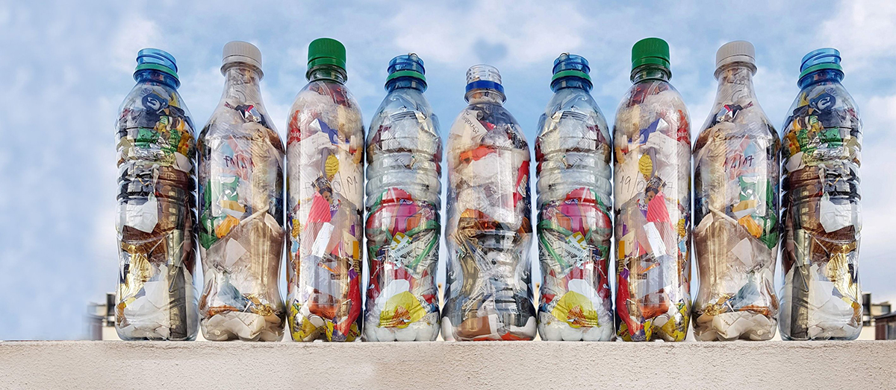
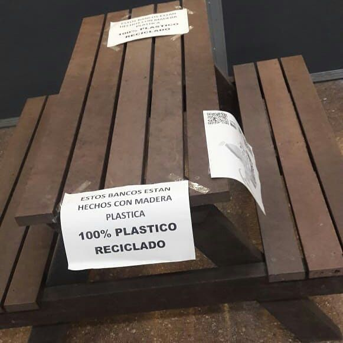
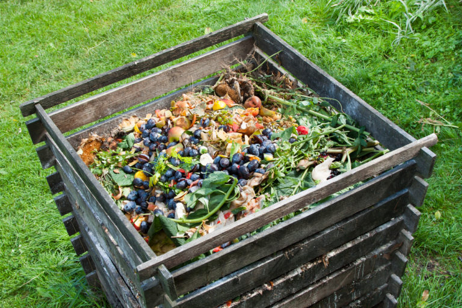
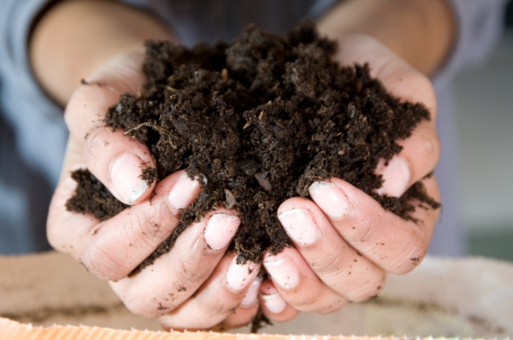
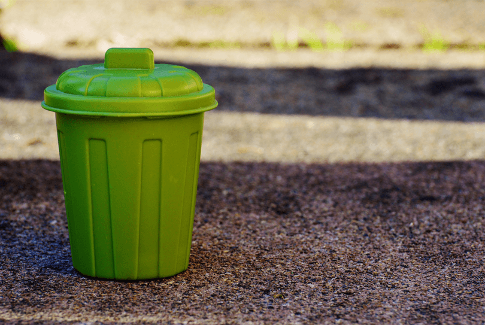
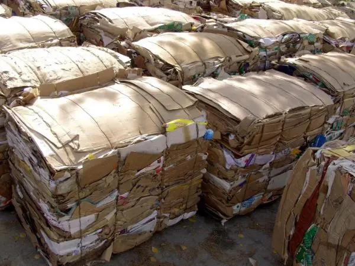
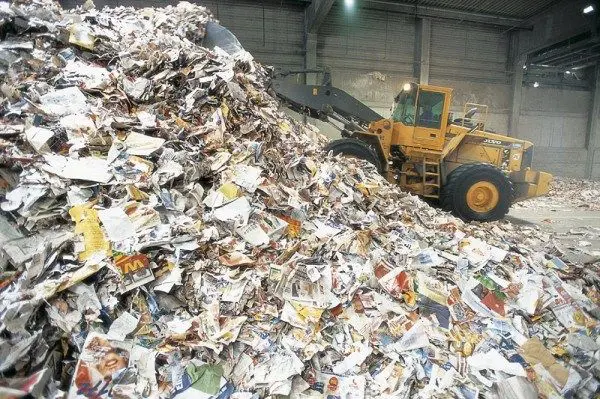
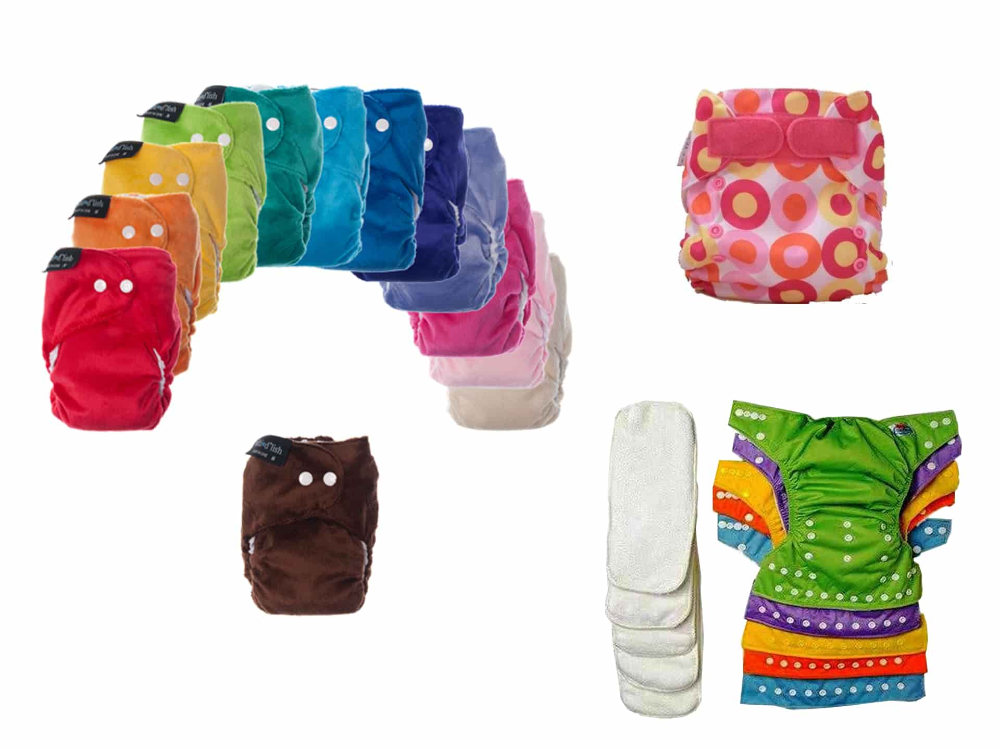
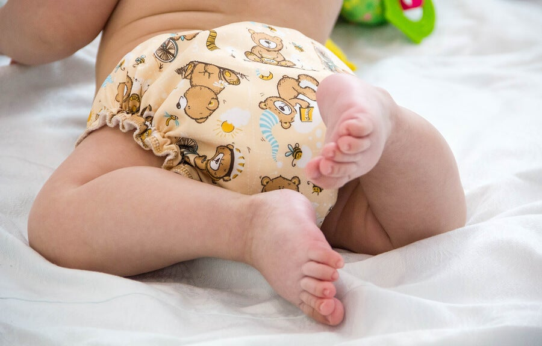

Tips Ecológicos
Botellas de Amor. ¿Qué son y para qué sirven?
Se trata de una iniciativa para reducir el impacto del plástico en el ambiente.
Cómo se hacen las botellas de amor y cuáles son los puntos de acopio.

Además de llevar adelante un consumo responsable, utilizar la menor cantidad posible
de artículos de un solo uso y separar los residuos, existe una práctica amigable
con el ambiente que gana cada vez más adeptos: reciclar a través de botellas de amor.
La iniciativa tiene menos de dos años en Argentina pero cada vez cobra mayor popularidad.
Consiste en rellenar botellas con residuos plásticos, que luego son compactadas y
transformadas en madera plástica.
Cómo llenar las botellas de amor
Para hacer botellas de amor se deben llenar botellas plásticas de cualquier tamaño
(desde botellas de aceite hasta bidones de 5 litros) con todo tipo de plásticos:
bolsas, paquetes de fideos, arroz, polenta, envoltorios de golosinas, entre otros.
Luego, con la ayuda de una cuchara de madera, varilla, aguja de tejer u otro elemento
que permita hacer presión, se compactan hasta llenarlas por completo y se llevan al
centro de acopio más cercano.
A diferencia de los ecoladrillos, que pueden llenarse también con cartón, papel o arena, las botellas de amor solo llevan plásticos que no se suelen reciclar en otros circuitos y que terminan en rellenos sanitarios. Entonces, ¿qué cosas no deben incluirse? Telgopor, tetrabrik, látex, metal, cartón, papel, telas, tierra, esponjas de cocina, arena, aluminio, gomas. "Si metiste algo de esto no desarmes la botella, la próxima sabés que no lo tenés que poner", aclaran desde la Fundación que lleva adelante la iniciativa, con sede en Bernal.
"Si no consumís productos embotellados, el plan B son las botellas de aceite, vinagre, potes de shampoo, botellas de productos para el piso", agregan y hacen una aclaración sobre las tapas: "Pueden ir, pero les recomendamos juntarlas para el Garrahan ya que ambos fines son hermosos".
Que se produce con las botellas de amor
La Fundación recolecta las ecobotellas, que luego son sometidas a distintos procesos de compactado para generar madera plástica. No es la propia institución, sin embargo, la que se encarga de esto: tiene una alianza con Econciencia, empresa que cada cierta cantidad de botellas recibidas entrega a la fundación bancos, mesas, sillas y más mobiliario que se destina a instituciones y a la creación de viviendas de interés prioritario en poblaciones vulnerables.
Algunas ventajas de la madera plástica -además de ayudar a reciclar y contribuir con el planeta- son que su producción desalienta la deforestación, tiene mayor duración que la madera tradicional, se puede lavar con cualquier detergente, no se raja ni se astilla, no es sensible insectos o roedores, su mantenimiento es sencillo y es de rápida fabricación.

¿Cómo hacer compost casero?
Hacer compost casero es una actividad ideal para toda la familia, una forma perfecta de acercar la naturaleza a los más pequeños de la casa, de transmitir valores de consumo responsable, reciclaje, respeto por el medio ambiente, etc.
Pero, además, preparar nuestro propio compost casero tiene una recompensa deliciosa: hacer crecer frutas y verduras con ese sabor de antes que ahora solo mantienen los productos ecológicos de calidad. Así, en este post te damos las claves para preparar un buen compost casero. ¿Nos acompañas?

Compost casero: 3 ideas básicas
Preparar nuestro compost casero no tiene apenas dificultad, pero sí debemos tener claras tres ideas importantes antes de empezar:
- Necesitaremos un compostador donde hacer crecer nuestro compost casero, un recipiente adecuado en el que ir añadiendo la materia prima que, poco a poco, se convertirá en compost. Este recipiente lo podemos comprar o, mejor todavía, construir uno propio reciclando y dando una segunda vida a objetos que ya han cumplido su labor inicial como, por ejemplo, tiestos viejos, palets de obra, cajas de fruta de madera, etc.
- Nuestra mezcla de compost casero va a ir creciendo a partir de diferentes tipos de materias primas: cáscaras de huevo, peladuras de frutas y de verduras, pieles de patatas, ramitas, paja fresca, hierba húmeda, posos de café… La clave está en combinar el azúcar, la celulosa y el nitrógeno de los diferentes desechos orgánicos con el fin de preparar ese abono orgánico que, en esencia, es el compost casero.
- El riesgo más importante de preparar compost casero es que los desechos se pudran y no consigamos nada más que una masa informe y pestilente. Evitaremos ese riesgo de dos formas:
-
Intercalando en capas alternas los desechos húmedos y secos.
- Ventilando periódicamente nuestra masa de compost.
Receta para preparar compost casero
Hay muchas recetas o formas diferentes de hacer compostaje o preparar compost casero, pero la que te proponemos a continuación es una de las más sencillas, así toda la familia podrá disfrutar de esta gratificante experiencia. Los datos los hemos extraído en su mayor parte del Manual de Compostaje publicado por el Ministerio del Medio Ambiente y Medio Rural y Marino del Gobierno de España, un documento muy interesante que te servirá para complementar la información que resumimos a continuación.

Los pasos básicos para preparar un compost casero de calidad son tres: preparar el compostador, ir añadiendo los desechos orgánicos por capas y, por último, hidratar bien tu fertilizante orgánico.

¿Te vas a animar a preparar tu propio compost casero? ¡Cuéntanos tu experiencia en el área de contacto
¿Cómo reciclar el cartón? ¿Y cuál es el proceso de reciclaje?

¿Quieres saber cómo reciclar el cartón? Te lo explicamos para que puedas reciclarlo de forma eficiente y saber todos sus beneficios.
El reciclaje hoy en día es fundamental en nuestra sociedad. Por este motivo, saber cómo reciclar el cartón es muy importante. Ya que muchos de los objetos y productos que adquirimos están embalados en cartón.
Para poder reciclarlo correctamente, te hemos preparado este artículo para que sepas cómo reciclar el cartón de una forma eficiente. Además de la explicación, te daremos algunos consejos para reciclarlo en casa, así como cuál es el proceso de reciclaje y, por último, algunos datos curiosos sobre éste.

¿Cómo reciclar el cartón?
A groso modo, existen dos formas para saber cómo reciclar el cartón: en el contenedor azul y en casa.
El contenedor azul acepta revistas, papel blanco, cajas de cartón, periódicos, papel de cocina e higiénico, sobres de cartas (¡Sobretodo sin ventanillas de plástico!), hueveras, papel de envolver regalos, etc.
En cambio, las servilletas de papel manchadas y los tetrabriks tienen que reciclarse en el contenedor amarillo. Así como el papel de aluminio y las etiquetas adhesivas.
También hay que tener en cuenta que el papel y el cartón que ya están usados, como por ejemplo las cajas de pizza (contaminadas de grasa y aceite), al llevar restos de otros residuos, dificulta su reciclaje y, por lo tanto, no se pueden reciclar.
¿Cuál es el proceso de reciclaje del cartón?
Seguidamente te explicaremos cuál es el proceso de reciclaje del cartón. Como podrás ver, es un proceso muy fácil y sencillo que aporta muchos beneficios, tanto económicos como medioambientales.
Cuando el cartón y el papel llegan a la fábrica, se deshacen, poniéndolos en un contenedor y con la ayuda de agua. Luego, para convertirlas en una pasta, se calientan y se amasan en una batidora industrial.

La segunda fase para saber cómo reciclar el cartón es separar otros componentes de las fibras de celulosa. Este proceso cobra mucha relevancia, puesto separa del cartón la posible cola de enganche, tintes y grapas, entre otros.
Cuando la pasta ya haya pasado por este proceso, se introduce en una máquina que la remueve con agua y jabón para conseguir un cartón resistente. Posteriormente, la pasta es tratada según el nivel de calidad que se quiera conseguir.
Datos curiosos sobre los beneficios del reciclaje
Como ya se conoce, el reciclaje aporta grandes beneficios para la naturaleza y el medio ambiente. Por cada tonelada de cartón y papel reciclado:
- Se consiguen 900Kg de material reciclado.
- Pueden ahorrarse 140 litros de petróleo y 50.000 litros de agua (lo que supone un 90% menos de agua y un 50% menos de electricidad).
- Se evita la emisión de 900Kg de dióxido de carbono (CO2, el cual se reduce un 80% gracias al reciclaje).
- Libera más de 2 metros cúbicos en el vertedero y, al reducirse los residuos, se alarga la vida de los vertederos.
- Actualmente, el cartón y papel suponen un 29% (aproximadamente) de los residuos de cualquier vertedero.
- Todas las fábricas de reciclaje generan empleo.
Ahora que ya sabes cómo reciclar el cartón y los beneficios que aporta, te animamos a promover el reciclaje en tu casa, trabajo y ciudad, Juntos conseguiremos reducir el impacto medioambiental, apostar por un desarrollo más sostenible y, por lo tanto, ¡Un mundo mejor!
Pañales ecológicos: Ventajas e inconvenientes de los pañales de tela lavables
Quizás oiste hablar de los pañales ecológicos lavables, sin ver realmente las ventajas que tienen. Aquí te explicamos todo, desde la diferencia de coste, el funcionamiento, y cómo comprarlos.
¿Cómo funcionan los pañales de tela ecológicos?
Los pañales ecológicos de tela son pañales lavables (perfectamente a la lavadora, que sustituyen a los "tradicionales" pañales de plástico que se compran en tiendas y supermercados.
Los pañales ecológicos son mucho más modernos que los pañales de antaño. Ahora, gracias a las telas biodegradables/ papeles interiores que se insertan en el pañal (ver video), son estas las telas que tiramos al W.C. , igual como si fuese papel higiénico. De esta manera, sólo queda la tela del pañal por lavar...Sin los inconvenientes de los pañales de nuestras bisabuelas!
Pañales ecológicos vs Pañales de plástico
Los pañales ecológicos tienen tres ventajas principales:
- son más económicos
- contaminan menos
- protegen mejor la piel de bebé

¿Cuanto se puede ahorrar con los pañales ecológicos?
Si consideramos que los pañales valen principalmente para los 2 primeros años del bebé, el coste por pañal es de 0,14 euro por un pañal de tela ecológico, contra 0,25 euro de media por un pañal normal de plástico. El coste del pañal ecológico corresponde al pañal 0,11 euro+0,03 euro de lavado.
Contando el número medio de pañales por meses, se gasta una media de 1250 euros en pañales de plástico los 2 primeros años (718 euros el 1er año, 540 el 2 año) contra 750 euros en total para los 2 años con los pañales de tela ecológicos. Asímismo, se ahorra más de 500 euros en pañales con los pañales de tela ecológicos.
El inconveniente que ven algunas mamás a la hora de comprar estos pañales es el desembolso principal, pues para los pañales unitalla se compra una sola vez al principio. Para 2 años de uso, 25 pañales de tela ecológicos unitalla cuestan alrededor de 550 euros, incluyendo 18 packs de 200 papeles interiores, los cuales se pueden comprar poco a poco. Si se elige pañales ecológicos a medida cuestan en total unos 580 euros, que se pueden repartir en unos 360 euros hasta los 18 meses, y 120 euros de 18 meses a 2 años aproximadamente.
